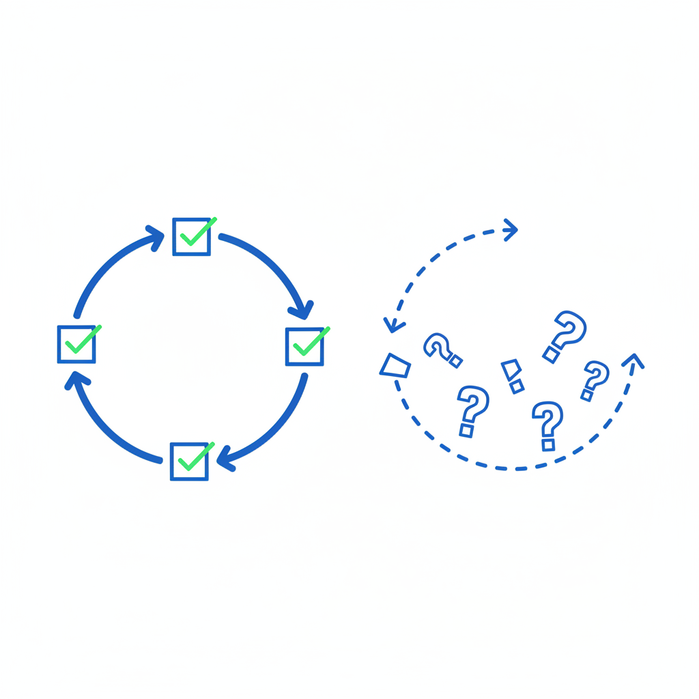
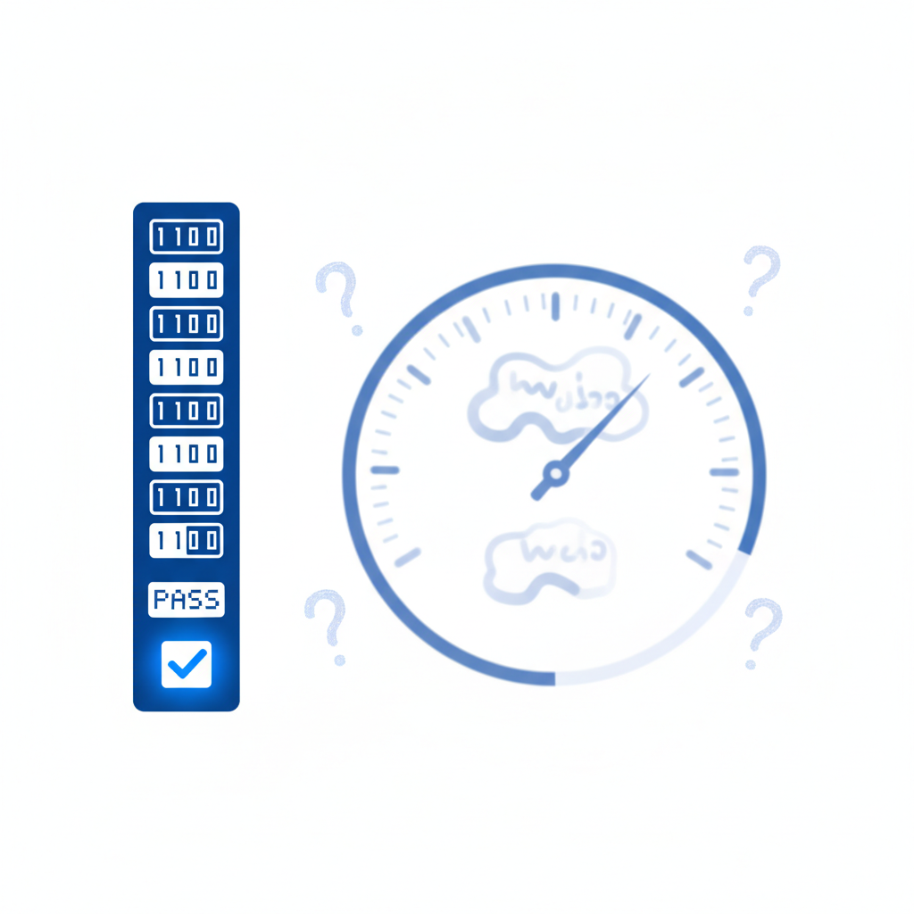

两个数字，一道裂缝
2026年2月，Cursor的年化收入突破20亿美元。
这个数字需要语境来理解它的分量。Cursor是一个AI代码编辑器，2024年初完成A轮时估值不到5亿美元。两年后年入20亿，估值600亿。SaaS产业40年历史上，没有任何产品接近这条增长曲线。Salesforce用了十年才到这个收入水平。
Cursor不是孤例。Claude Code的年化收入也突破了25亿美元。整个AI编码工具市场在两年内从51亿翻倍到128亿美元。
如果只看这些数字，你会觉得AI已经无可争议地成功了。
同一个季度，另一组数字从另一个方向传来。
Sinch在2026年5月发布了一份覆盖10个国家、2527名企业高管的调研。结论：74%的企业已经回滚了部署的AI客服Agent。不是"效果不及预期"——是部署了，出了问题，撤回来了。
这不是客服一个行业的困境。一项针对847个企业AI Agent部署的分析发现，76%在头90天内出现严重故障。BCG的数据更冷：60%的企业AI项目产生零实质价值。
两组数字，同一个底层技术——大语言模型。一边是人类历史上增速最快的软件产品，一边是四分之三的企业把系统撤了回来。
常见的解释是"编程特别适合AI"。但这只是用另一种方式重复了问题——它没有解释"适合"到底意味着什么。
编程和客服、销售、管理之间，到底有什么结构性的差别，使得同一个大语言模型在一个领域创造数百亿价值，在另一个领域只能制造麻烦？
答案藏在一个被大多数人忽略的特征里。代码写完可以跑测试。客服做完，不能。
代码能跑测试，你的工作不能
Andrej Karpathy——OpenAI联合创始人、前Tesla AI负责人——在2025年底给出了一个框架。他的原话是：传统计算机自动化你能用代码"指定"的事情；大语言模型自动化你能"验证"的事情。
区别在于：指定是事先写规则，验证是事后判结果。大语言模型不按规则运行，它生成输出，然后看输出好不好。如果你有办法快速判断"好不好"，模型就能通过反复尝试变得越来越好。如果你没有，它就只是在猜。
编程恰好拥有世界上最干净的验证系统。代码跑完，要么通过，要么报错——没有"还行""差不多""看从哪个角度理解"。每一次尝试的结果都是二进制的、即时的、无歧义的。
Karpathy总结了验证需要满足的三个条件：可重置——你可以不断从头再来；高效——几秒钟就能跑完一轮反馈；可奖励——有明确的打分方式。编程三条全满足。git revert让任何尝试都能撤销。自动化测试套件让反馈以秒级返回。pass/fail给出了最干净的奖励信号。
这个验证闭环不仅帮助AI在部署后被监控，更重要的是，它从训练阶段就决定了AI的能力上限。
训练数据证实了这一点。DeepSeek在2025年初展示了一种方法：仅靠"对/错"的验证信号训练AI，不需要人工标注，一个小型模型的数学能力就提升了3.7倍。编程Agent的能力基准（SWE-bench）两年内从30%飙升到75%。验证信号越干净，AI进步越快。
但这种进步有一个前提条件，看另一组数字就明白了。AI Agent在执行多步骤任务时面临复合错误率的制约。如果每一步的准确率是85%——这已经是相当不错的水平——执行10步任务的端到端成功率只有约20%。95%的单步准确率在20步任务上降到36%。90%的准确率在100步流程上趋近于零。
编程Agent能在每一步用测试来验证和纠错，把链条上的错误及时截断。缺乏验证信号的领域，错误沿着链条不受控地累积，每一步都在放大上一步的偏差。
编程AI在飞速进步，其他领域的AI Agent看起来"永远差那么一点"。差的不是一点能力。差的是验证闭环本身。

Klarna的700人教训
一个合理的反驳：客服也有指标。客户满意度评分、首次解决率、平均处理时间——这些难道不是"验证信号"吗？
Klarna的故事回答了这个问题。
2023年底，这家瑞典金融科技公司决定用AI Agent替换约700名客服人员。CEO Sebastian Siemiatkowski公开宣布，AI正在处理三分之二的客户查询，相当于700个全职员工的工作量。客户满意度评分没有明显下降，成本大幅削减。一切看起来在按计划推进。
到2025年中期，问题浮出了水面。复杂交互的质量在下降，客户在流失。AI能处理标准查询——"我的订单到哪了""怎么退货"——但遇到需要判断力的场景——不满意的语气、模糊的诉求、需要灵活处理的例外——它开始制造摩擦。
Siemiatkowski后来公开承认："我们过度关注效率和成本，结果质量下降了。"Klarna转向一种他称之为"Uber模式"的方案：简单事务让AI做，关键时刻交给重新招聘的远程人工客服。
Klarna不缺数据，也不缺指标。问题出在一个容易被忽略的区别上。
代码测试提供的是完备验证。一个函数的输出要么与预期一致，要么不一致。没有中间地带，没有解读空间。测试通过就是通过。
CSAT提供的是伪验证。一个客户给了4分，意味着满意吗？也许他只是懒得打低分。也许他暂时满意但下次会选竞品。也许他对AI的回答感到不适但说不清哪里不对。CSAT测量的是客户"愿意在量表上表达的那个维度"，但客户体验是多维的、滞后的、模糊的。数字在合理区间内波动，底下的东西在流失。
客服不是孤例。AI销售工具经历了类似的周期——50%到70%在一年内被客户弃用。原因相同：一个销售在该打电话的时候发了邮件，在该让步的时候坚持报价，这些决定的对错在任何仪表盘上都看不出来。但客户感受到了。
编程有pytest。销售没有。

一张可验证性光谱
把所有工作按可验证性排列，会得到一张光谱。
光谱的一端是编程和数学。正确与否由机器自动判定，反馈秒级返回，任何尝试可以无成本地重来。AI在这个区域两年内能力翻了一倍多。
光谱的中间地带是客服标准件、数据录入、基础财务处理。这些岗位有指标——处理时间、错误率、完成率——但指标是残缺的。它们能测量效率，无法覆盖质量的全部维度。Anthropic的经济指数报告显示，客服和数据录入岗位的AI任务覆盖率确实仅次于编程，但这种覆盖的可靠性远低于编程领域。
光谱的另一端是品牌策略、高管教练、组织设计、商务谈判。在这里，连"做对了"的定义都难以达成共识。一个品牌策略的好坏可能三年后才看得出来。一次关键谈判的"成功"，可能意味着拿到了合同，也可能意味着没拿到合同但保住了关系。这些工作的结果是长周期的、多维的、高度依赖情境的。
Anthropic在2026年3月发布的经济指数报告给出了一个反直觉的事实：高薪职业的AI暴露度更高，而非更低。计算机和数学相关任务占Claude平台对话量的35%。AI首先瞄准的不是流水线工人，是坐在电脑前的知识工作者——写代码的、做分析的、处理数据的。
这和过去两百年的经验完全相反。蒸汽机、电力、流水线，先替代的都是体力劳动者。AI是第一个反过来的技术：它先吃掉最"聪明"的那批工作，条件是那些工作能被打分。
Cognition的编程Agent Devin完美展示了可验证性光谱的两面。在需求明确、结果可验证的任务上——安全修复、代码迁移——Devin比人类快10到20倍，67%的PR被合并。但在需求模糊的任务上——"让应用更快""改善用户体验"——独立测试中20个任务失败了14个。同一个Agent，可验证的活干得漂亮，不可验证的活一塌糊涂。
光谱上的位置决定了你面对AI时的处境。
"部分可验证"区域反而是最危险的位置。不是因为你的工作最先被替代，而是因为你容易掉进Klarna式的陷阱：管理层看到指标"还行"，决定让AI接管。等到发现指标遮盖了真实的质量流失，损失已经造成了。完全不可验证的工作不会产生这种幻觉——所有人都知道AI做不了。
焦虑的方向反了
过去两年，大多数人的AI焦虑遵循一条直线：AI越来越聪明，它能做的事越来越多，我的工作迟早被替代。应对方案也很直线：学AI工具，学编程，拥抱变化。
这条直线的问题不在于它太悲观。在于它的方向搞反了。
如果可验证性决定了AI自动化的边界，那么"AI能替代什么"不取决于工作的智力难度、技术含量或薪资水平。它取决于一件事：这份工作的输出能不能被快速、明确、低成本地判定对错。
编程是高智力、高薪资、高技术含量的工作。但它是最容易"打分"的知识工作。代码跑通就是跑通，不存在"从另一个角度看其实也跑通了"。所以编程最先沦陷。
销售、管理、战略咨询是另一种工作。结果周期长，维度多，严重依赖情境和关系。你很难写一个函数来判断一次客户拜访是"成功"还是"失败"。这些工作在AI面前反而更安全——不是因为它们更高级，而是因为AI无法从中获得训练和改进自己所需的反馈信号。
Princeton大学的Kapoor和Narayanan在2026年2月发表的研究提供了数据支撑。他们评估了14个模型在两个基准上的表现，发现一个显著的不对称：在通用Agent基准上，可靠性改善速度只有准确率改善速度的一半。在客服任务上，这个比例进一步降到了七分之一。
AI在不可验证领域的进步速度，和它在编程领域的进步速度，根本不在同一个量级上。
那些"说不清做得好不好"的工作，在相当长的时间内不会被AI替代。但这枚硬币有另一面。
AI无法替代你的工作，同时也意味着AI很难高效地增强你的工作。编程领域的从业者可以借助AI把生产力提升数倍——因为AI的输出可以被快速验证和使用。但如果你是品牌策略师，AI给的建议你没法快速验证好坏，只能凭经验和直觉去过滤。AI对你的增效天然有上限。
合理的应对策略不是一刀切地"学AI工具"。它取决于你工作的可验证性程度。
如果你的工作高度可验证——编程、数据分析、基础会计——AI替代的速度会超出你的预期。你的价值正在从"做"转向"审"。核心能力不再是写代码，而是判断AI写的代码对不对、在什么情境下不能信任它。现在就该建立人机协作的工作流程。
如果你的工作处于光谱中段——产品经理、运营、市场营销——你面对的是最复杂的局面。你的工作有一些可量化的维度（转化率、DAU、ROI），AI可以在这些维度上帮你提效。但你的核心价值藏在不可量化的部分：判断哪些指标重要，决定什么不做，在数据不够的时候拍板。警惕Klarna式的陷阱：不要因为AI能优化你工作中可量化的那20%，就让它接管全部。
如果你的工作几乎不可验证——关系管理、组织领导、复杂谈判——你暂时安全。但你的护城河不是"AI做不了"，而是判断力、情境感知和人际关系资本。这些能力没有快捷方式，只能在真实决策中慢慢积累。
谁在造下一个测试套件
可验证性不是命运。它是可以被构建的。
已经有人在尝试为编程之外的领域制造验证闭环。法律科技公司在训练模型判断合同条款是否合规——法规条文是明确的，对错可以被裁定，这是一种可验证任务。医疗AI在诊断影像——X光上有没有肿瘤也接近二进制判断。这些领域的AI正在取得进展，原因正是它们各自找到了自己的"测试套件"。
但为大多数知识工作构建验证器，面临的不是工程困难，而是一个更根本的障碍。
构建"销售验证器"意味着你需要先定义"什么是好的销售"。不是"成交率高"——那是结果指标，是事后诸葛亮，不是过程验证。你需要回答的是：在每一个具体时刻，面对每一个具体客户，AI做出的这个决定——发邮件还是打电话，坚持报价还是让步，现在跟进还是等一周——到底是对还是错。
这不是工程问题。这是认识论问题。
医疗领域的一个案例可以说明即使在部分可验证的场景中，挑战也有多大。单个诊断模型的准确率达到97%——足够令人印象深刻。但当多个模型组成链式系统——先读影像、再查病历、再生成建议——整体可靠性降到了74%。每四个病人中可能有一个收到不准确的诊断结果。即使在有验证信号的领域，复合错误率依然致命。
Karpathy在2026年的Sequoia AI Ascent演讲中提到了一个方向：他称之为"未被发现的有价值RL环境"。谁能为新的领域找到干净的验证信号，谁就能解锁下一波AI能力的跃迁。这是一个巨大的创业机会——但也是一个可能需要数十年才能回答的问题。
AI自动化的真正边界，不是算力，不是数据，不是模型架构。
是一个古老的问题：什么叫"对"。